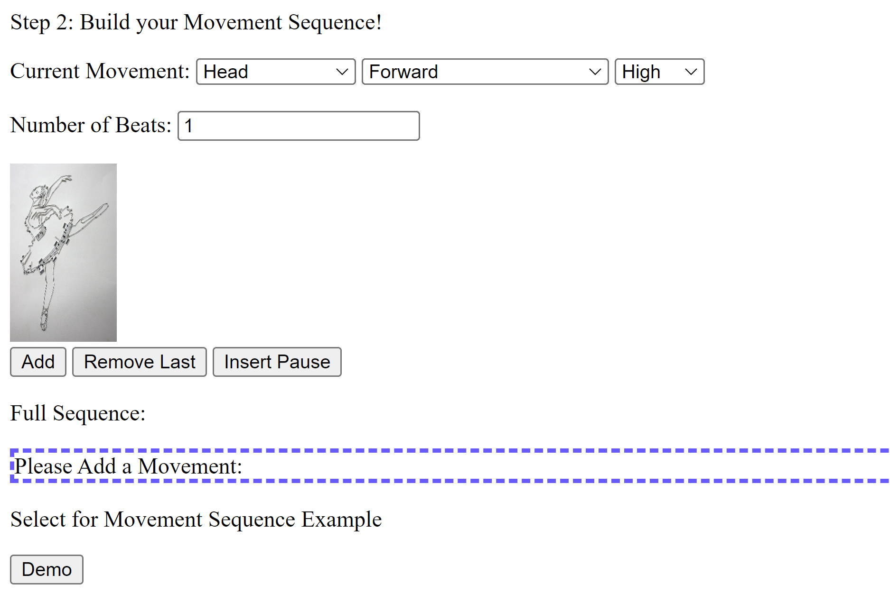

Anya Trumbach, COMS 3430: Computational Sound - Dr. Mark Santolucito
Final Project: Music for Dance Generator
Step 1 of my generator allows the user to pick some initial parameters for their composition: beats per minute
start time, and mood of the piece. I used beats per minute to calculate timeElapsedSecs in my playMelody() function
by dividing by 60 and then dividing the duration for a particular move by the result (EQN 1). Start time is the amount
of time before the melody begins to play, while the mood sounds always begin as soon as the play/pause button is pressed.
This melody sound is produced by connecting an oscillator node at a frequency between 125 and 350 depending on the chosen
mood to the frequency of another oscillator which produces a vibrato effect. The underlying tone is connected to its own
gain node so that it is balanced with the melody and is always quieter then the melody that is playing.
EQN 1: ( Time in Seconds (Seconds) = Duration (Beats)/ (Beats/Second))
 Step 2 requires users to input their movement sequence in accordance with the descriptors utilized by Labanotation,
a common dance notation system. While I used the Labanotation descriptors (bodypart, direction, level, and duration),
I chose to change the available body parts so that my generator would be controlled by joint-initiated movement and
and would better match the 12 notes of an octave. Movements initiated by the head and chest offer the user slight variation
from the notes in the western classical octave. As each movement is added to the sequence, I update the display and other variables
such as the total timePassed, which allows me to display the end time of the piece at the end of the movement sequence list.
Users also have the option to add a pause into the sequence, delete the last added movement, or select a demo that has an example
sequence to play.
Once a movement sequence is entered, users can play/pause their composition or reset the page. In order
to actually play the melody, my program first runs the play() function which initializes all of the necessary oscillator and gain nodes.
This function plays the low frequency oscillator that creates the underlying tone since it is played seperate from the melody.
I also create a distortion curve here for a waveshaper node which will be used later to add a distortion effect to the sound and set up
a bandpass filter to again be use later.
The play() function then runs a playMelody() function which reads through the movement sequence and generates
the associated sounds. I chose to map bodypart used to pitch so that the tone of the melody is directly changed by the movement.
Level determines what octave the assigned note is played in. I do this by multiplying the frequency by two to go up an octave if the movement
is on a high level and dividing by two to go down and octave if the movement is on a low level. Otherwise the note will be played at
the initially mapped frequency. If the movement is actually a pause, playMelody() just adds to timeElapsedSecs so that later notes are not
played by the audio context until this time has passed.
PlayMelody() also checks the previous movement to decide if effects should be added to the sound of the melody before it is sent
to the globalGain. If the same body part is used twice, the melody is connected to the waveshaper node from earlier and then passed to the globalGain
node and the audio context destination. I made this choice, because often in choreography, repetition is used to emphasize a point or increase
the emotional effect of the choreography. I thought that a distorted sound would draw the listeners ear more than a regular sinusoidal
oscillator. If a different side of the body is used (moving from right to left to center or to the head in any order) then the melody is passed
through the bandpass filter, which emphasizes frequencies surrounding the new frequency. I made this choice, because using a different
side of the body in choreography is a more distinct visual change than switching from a knee to foot on the same side of the body, so I wanted
the newly chosen frequency to have a more centralized effect on the sound than the old frequency. I used the disconnect function to switch
between filters and effects, but had to keep track of the previous effect in order for this function to work.
I also chose to use the direction of movement to add more variety to the melody by added a second note to the final product. Using frequency
ratios, playMelody() will add a second oscillator to the final product as long as the movement is not forwards or backwards. For both
the orginal melody note and the second interval note if applicable, playMelody() changes the gain node that these notes are connected to and
keeps track of timeElapsedSecs so that the notes don't overlap. The melody will keep playing over the undertone until the play/pause
is pressed again, the global gain is set to zero, and the oscillators are stopped.
Ideas for Next Iteration: